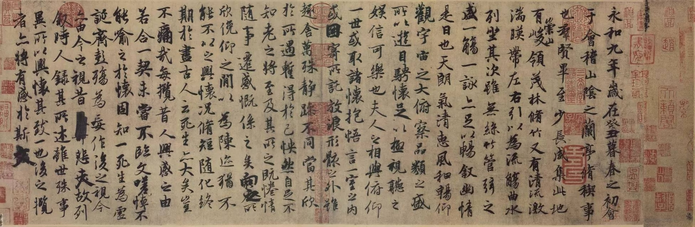
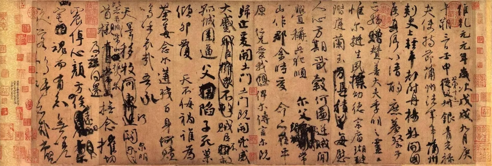
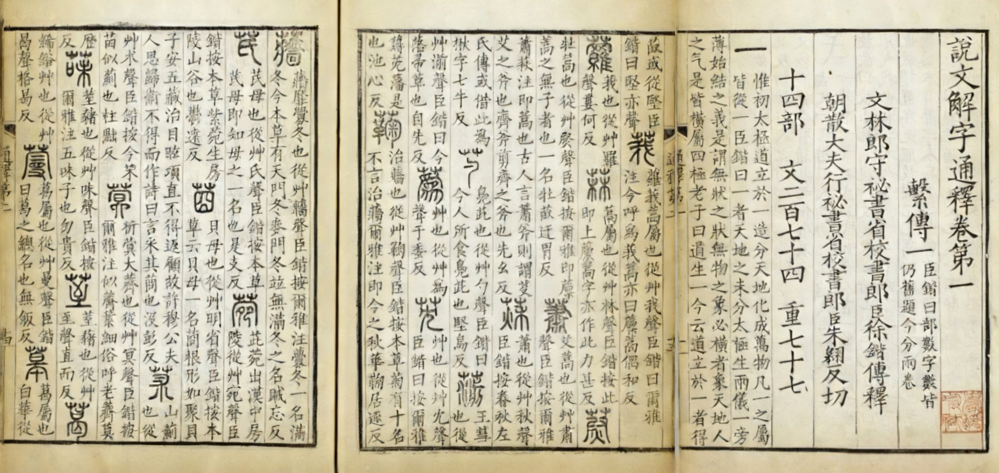
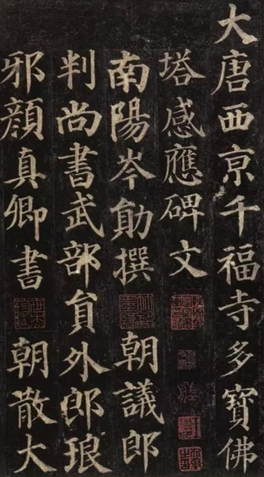
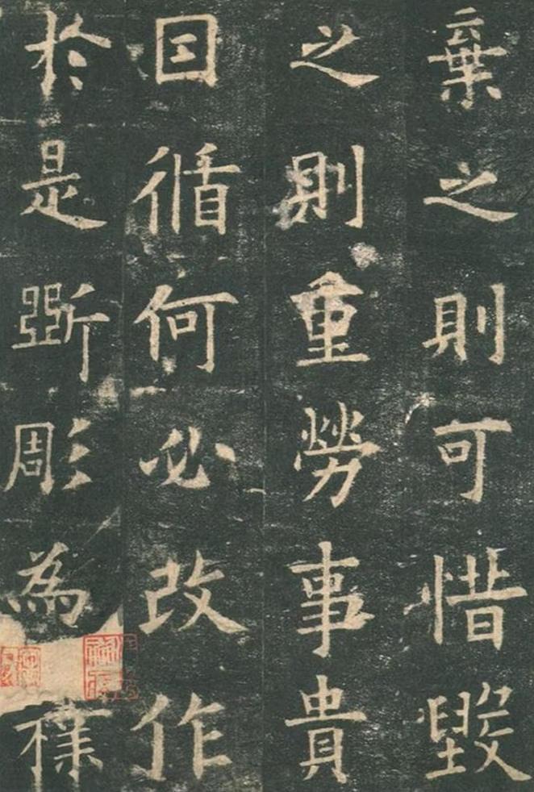
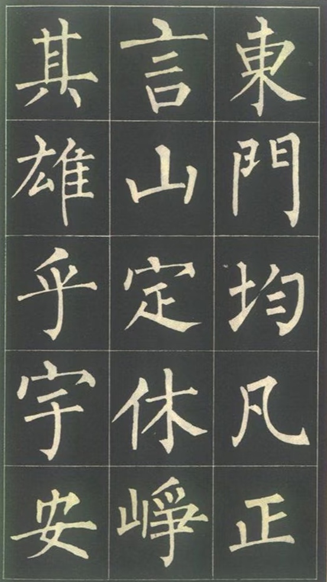
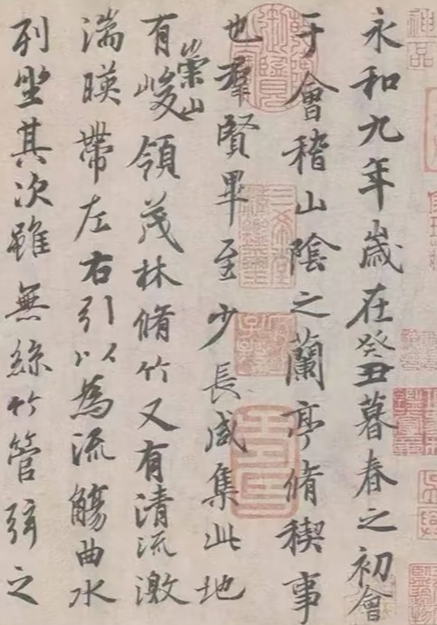
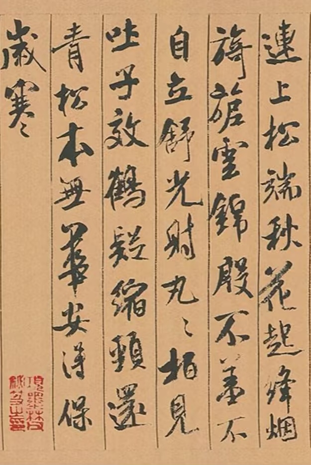
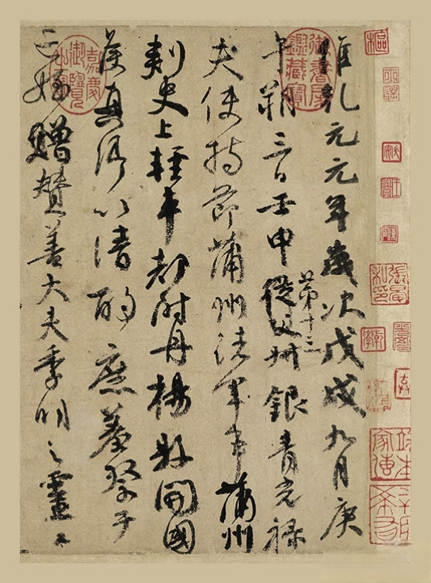

首页
汉字的由来
汉字成长史
造字小秘密
汉字里的文化
趣味汉字乐园
活字印刷
汉字小名家
传承汉字文化
首页
汉字的由来
汉字成长史
造字小秘密
汉字里的文化
趣味汉字乐园
活字印刷
汉字小名家
传承汉字文化
汉字圈藏着不少文化名人今天咱们认识写好字的名家、讲透字的字典，再赏赏漂亮书法吧！

王羲之是东晋时期的大书法家，被尊为“书圣”。他的书法灵动飘逸，笔画像裹着轻云般舒展，又暗含力量感，代表作《兰亭序》被誉为“天下第一行书”，至今仍是书法界的经典范本。

颜真卿是唐朝的书法大家，也是“颜体”的创始人。他的字体厚重刚正，笔画方整饱满，看着像稳立的巨石般有气势，既大气又有风骨，《祭侄文稿》《颜勤礼碑》都是他的传世名作。

《说文解字》是东汉许慎编写的汉字字典，它是历史上首部系统解析汉字的典籍——不仅讲清楚每个字的写法，还会说明字的起源（比如“日”是模仿太阳的形状）、含义演变，是了解汉字“身世”的重要工具书。






看旁边的范字，在田字格里用鼠标（或手指）描一描，点"清空"重写。
资料来源：书法家生平与作品介绍参考《中国书法史》及《说文解字》相关公开出版资料整理。